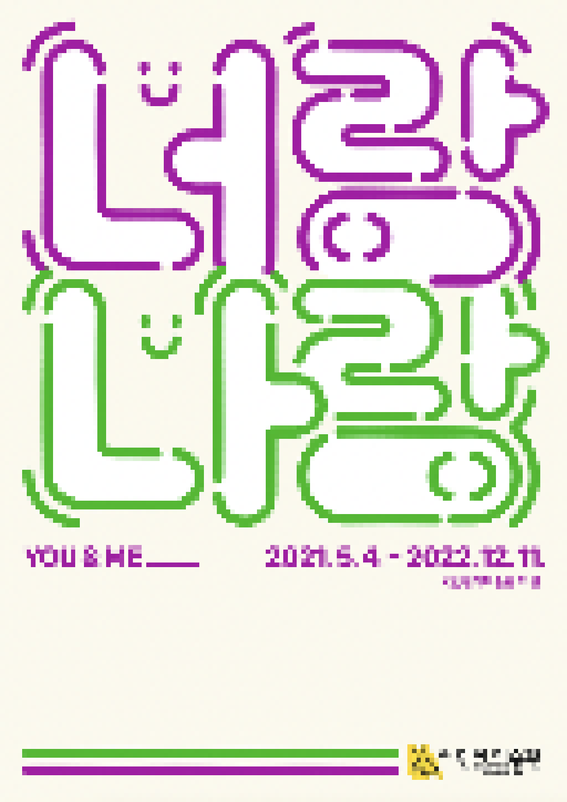

> title
너랑 나랑___
> content
어린이들이 예술과 자유롭게 소통하며 다채로운 경험을 할 수 있는 체험전 《너랑 나랑___》을 2021년 5월 4일(화)부터 12월 11일(일)까지 개최한다.
코로나19로 바뀐 일상을 경험하고 있는 어린이·가족 관람객들이 예술작품을 통해 일상을 되돌아보며, 나와 너,
우리의 관계와 의미를 찾고 자신의 자아 정체성으로부터 출발하여 나와 함께한
사람들, 주변을 되돌아보며
관계성을 탐구하며 사회적 유대감, 그리고 공동체성의 의미를 탐색하는 시간을 마련하고자 한다.
1부 나를 찾아
홍승혜 작가의 <자화상> 과 천경우 작가 〈Face of Face-#1, #5〉는 자신의 자아를 찾아가며 주변과의 관계 속에서 나를 이해할 수 있는 작품을 선보이고, 관련 연계 프로그램이
운영된다.
※ 앤디 워홀 <자화상>은 2021.5.4. ~ 2021.12.31.까지 전시되었습니다.
2부 함께·같이
가족, 친구, 선생님, 이웃 등 나와 일상을 함께 보내고 있는 사람들을 떠올려보고 사람들과 함께 한 이야기, 소리, 표정, 감정 등을 이야기하는 작품을 만나고 표현해 보는
프로그램이 마련된다. 리사박,
서세옥, 이미주 작가의 작품이 전시된다.
3부 주위를 둘러봐 : 함께 살아가기
집, 학교, 동네, 놀이터 등 나, 너, 우리와 관계 맺고 있는 주변의 장소와 환경을 떠올려 보는 공간으로 기획되었다. 일상의 주변 공간 ㆍ 장소의 의미를 생각하고 새롭게
발견할 수 있는 작품과
프로그램을 만날 수 있다. 최호철, 김지수, 김유선, 홍승혜 작가의 작품이 전시된다.
※ 어린이미술관은 '과천관 전시관람 예약'으로 이용 가능합니다.
